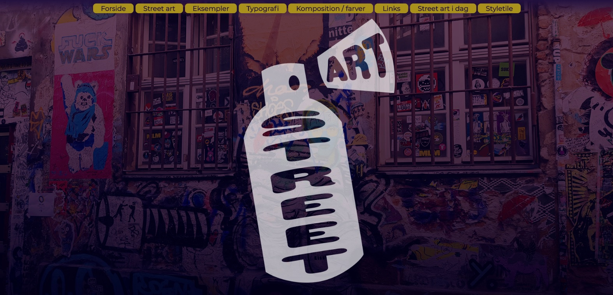
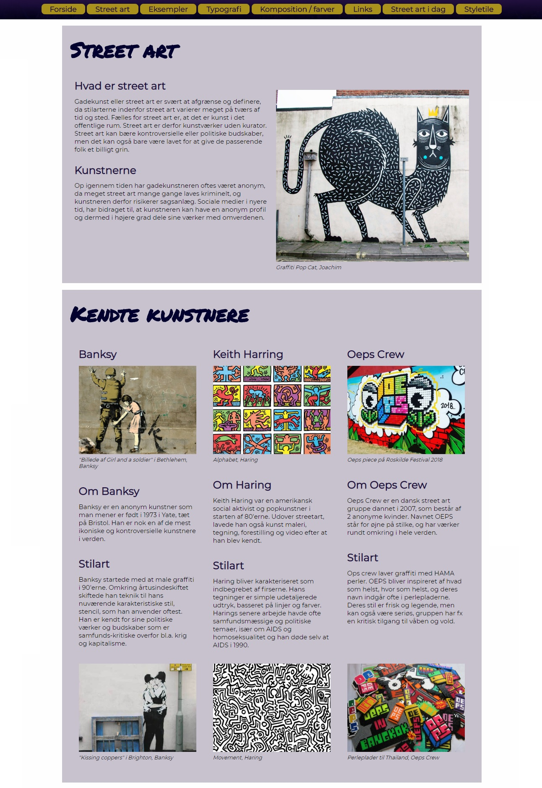
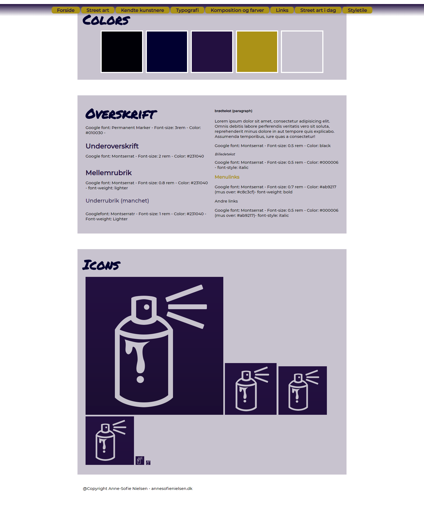

I tema 1 Grundlæggende web har vi arbejdet med stilarter og websites. Jeg er blevet tildelt streetart som stilart.
Temaet er mundet ud i opgave 01.04.02, hvor vi har skulle afleverer en responsiv website ud fra et givent layoutdiagram, med splashbillede, navigationsmenu og favicon, som gør brug af webfonts og validerer uden fejl i HTML og CSS.

Splashbilledet er indsat som et background image, med en position som gør at udsnittet tilpasser sig alle skærmstørrelser.

Websitet er bygge op efter et udleveret layoutdiagra og er delt op i sectioner bygget op med flexbox. Der er brugt media queries for at sikre at siden opbygning fungerer i alle visninger

Websitet er lavet ud fra mit styletile, som visualiserer de designvalg jeg har taget ift. farver, typografier og iconer.